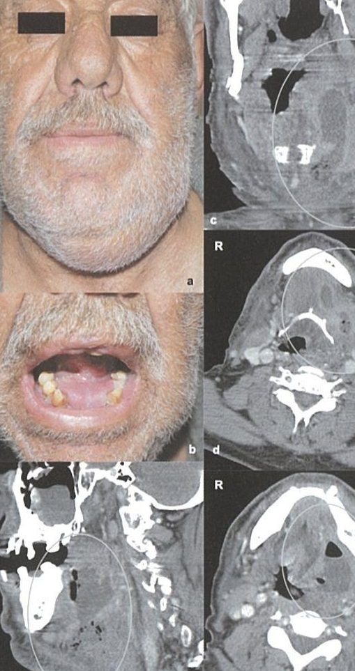
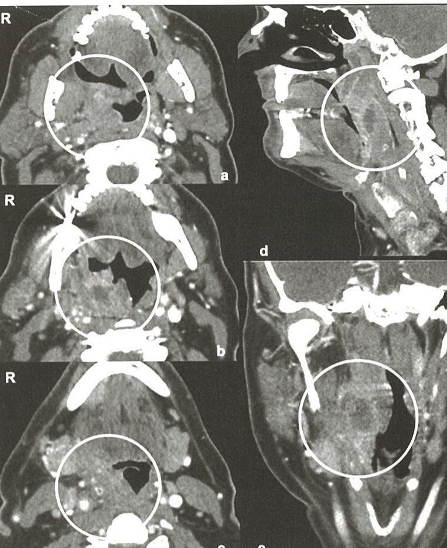
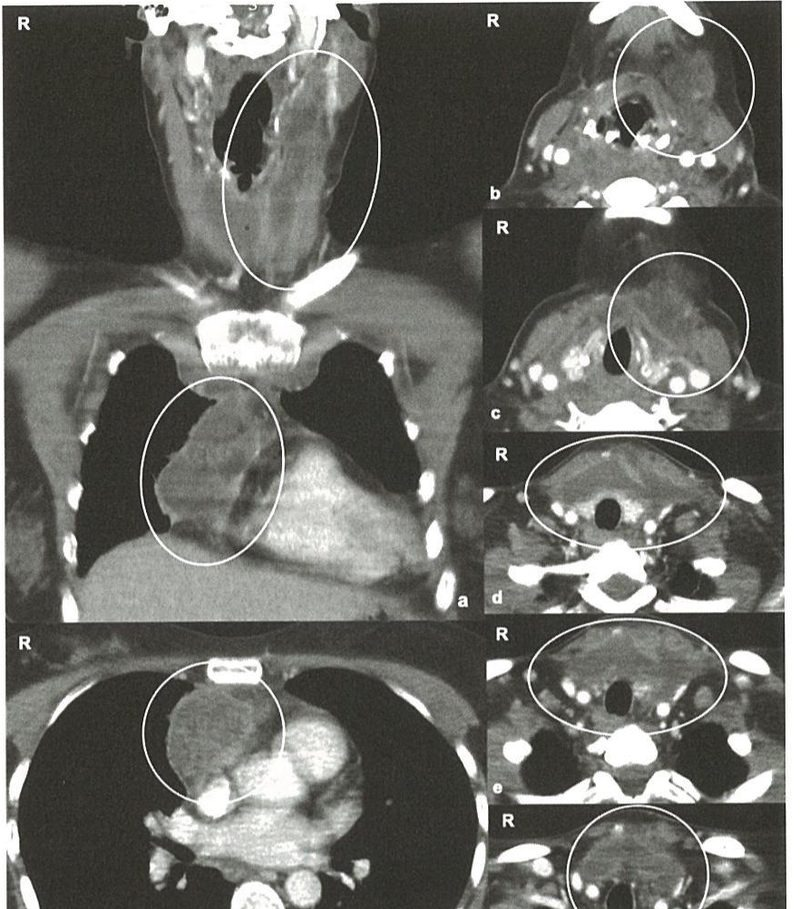

| Konu | Derin boyun enfeksiyonları — fasya boşlukları, alan-özgü klinik, hava yolu ve drenaj kararı |
|---|---|
| Sistem | Baş-boyun — servikal bölge, enfeksiyon |
| Süre | ~80 dakika |
| Ana kaynak | Koç C, Kısım 8 Bölüm 1 (b.745-796) |
| Ek | Papila İ (ed) Ders Kitabı I, böl. 19 (CC BY 4.0) · Önerci Cilt 5 böl. 12 |
Derin boyun enfeksiyonunda asıl mesele hangi boşluğun tutulduğunu adlandırmak değil, o boşluğun nereye açıldığını bilmektir. Fasya tabakaları arasındaki potansiyel aralıklar kafa tabanından diyaframa kadar kesintisiz bir yol oluşturur; bir molar dişten başlayan enfeksiyon üç günde mediastene inebilir. Ve her şeyden önce: tanısal hiçbir işlem hava yolunun önüne geçmez.
Derin boyun enfeksiyonları (DBE), boyunun derin fasya boşluklarını tutan, hem çocuklarda hem yetişkinlerde görülen, potansiyel olarak yaşamı tehdit eden enfeksiyonlardır. Genellikle bir yumuşak doku enfeksiyonu (en sık odontojenik veya tonsiller/farengeal kaynaklı) komşu potansiyel boşluklara yayılarak selülit veya apse formasyonuna ilerler.
Boyun anatomisi, lenfatik istasyonlara göre I-VII seviyelerine bölünür — bu sınıflandırma Gün 17'de işlenmişti. DBE açısından asıl belirleyici olan ise derin servikal fasyanın oluşturduğu potansiyel boşluklardır. Yüzeyel fasya cildin hemen altındadır; derin servikal fasya yüzeyel, orta ve derin katman olmak üzere üç tabakadan oluşur ve aralarında enfeksiyonun yayılabileceği potansiyel aralıklar bırakır.
| Boşluk | Sınırlar / konum | Klinik önemi |
|---|---|---|
| Submandibüler / submental / sublingual | Mandibula, milohiyoid, digastrik kaslar arası (suprahiyoid) | Odontojenik enfeksiyonların en sık ulaştığı alan; Ludwig anjininin yeri |
| Peritonsiller | Tonsil kapsülü ile konstriktör farengeus superior arası | En sık DBE (bkz. Gün 7); parafarengeale kolayca yayılır |
| Parafarengeal (lateral farengeal) | Farengeal duvar, pterygoid kaslar, parotis arası | Trafik kavşağı — karotis kılıfını içerir |
| Retrofarengeal | Farengeal duvar arkası, prevertebral fasya önü; üst mediastene iner | Çocuklarda sık (lenf nodu kaynaklı); mediastinite direkt yayılım |
| Tehlikeli alan | Retrofarengealin hemen arkası, gevşek areolar doku; kafa tabanı → diyafram | Enfeksiyonun hızla ve engelsiz mediastene inebildiği en riskli boşluk |
| Prevertebral | Prevertebral fasya ile vertebra arası | Nadir; travma veya vertebra enfeksiyonu (tüberküloz) kaynaklı |
| Viseral vasküler (karotis kılıfı) | Üç fasya tabakasının da katıldığı boşluk | Tüm DBE'nin ulaştığı ortak yol; VJİ trombozu, karotis rüptürü |
| Mastikatör | Masseter, pterygoid kaslar, ramus mandibula çevresi | Odontojenik (molar diş); trismus belirgin |
| Parotis | Parotis bezi çevresi | Parotis enfeksiyonundan veya komşu alanlardan yayılım |
DBE'nin bugünkü sıklığı, geniş spektrumlu antibiyotiklerin yaygın kullanımı öncesine göre azalmıştır. Antibiyotik çağı öncesinde büyük çoğunlukla farengeal ve tonsiller enfeksiyonların yayılımı sonucu parafarengeal alanda gelişiyordu. Günümüzde DBE sıklıkla odontojenik ve tükürük bezi kaynaklı enfeksiyonlar nedeniyle ve özellikle submandibüler alanda gelişmektedir.
Çocuklarda peritonsiller alanla ilişkili akut tonsillit en sık nedendir; retrofarengeal lenf nodu enfeksiyonuna bağlı tutulum ikinci sıklıktadır — bu lenf nodları 4-5 yaşından sonra gerilediği için görülme sıklığı yaşla azalır.
Son çalışmalarda intravenöz ilaç bağımlılığı DBE etiyolojisinde önemli bir rol oynamaktadır: non-steril iğnelerle boyundaki damarlara sık enjeksiyon, koruyucu servikal fasyanın bütünlüğünü bozarak derin boyun alanlarının enfekte olmasına yol açabilir.
Üst solunum yolu ve tükürük bezi enfeksiyonları, odontojenik enfeksiyonlar, travma, yabancı cisim ve muayene/cerrahi manipülasyonlar en sık kaynaklardır. Odontojenik kaynaklar günümüzde başlıca nedendir — ve genellikle tek bir alanla sınırlı kalmazlar; mastikatör ve submandibüler alanlar en sık etkilenenlerdir.
Hastaların büyük çoğunluğunda polimikrobiyal enfeksiyon görülür; aerob ve anaerob bakteriler birlikte etken olur. Streptokoklar ve Staphylococcus aureus sıklıkla sorumludur.
| Grup | Örnekler |
|---|---|
| Aerob | Streptokoklar (grup A beta, alfa, D) · Stafilokoklar (S. aureus, koagülaz-negatif) · Haemophilus · Klebsiella pneumoniae · Neisseria |
| Anaerob | Bacteroides (özellikle B. fragilis, B. melaninogenicus) · Peptostreptokok · Fusobacterium (F. necrophorum — Lemierre etkeni) · Eikenella corrodens |
| Mantar | Candida albicans (nadiren, immünsüprese hastalarda) |
En sık semptomlar ateş, ağrı ve şişliktir. Boyunda ağrılı şişlik, disfaji/odinofaji, iştah kaybı, trismus, boyun hareketlerinde kısıtlılık, solunum problemleri ve ses değişiklikleri her alan enfeksiyonunda az ya da çok görülebilir.
1836'da Wilhelm Friedrich von Ludwig tarafından tanımlanmıştır: sublingual ve submaksiller alanların birlikte tutulması (milohiyoid kasının hem üst hem alt tarafında enfeksiyon). Ludwig'in beş ölçütü:
Kaynağı genellikle odontojeniktir. Klinikte görülen aslında gangrenöz sellülittir — hiçbir ön belirti vermeden agresif yayılarak hava yolunu sıkıntıya sokabilir. İki taraflı submandibüler tutulumda ağız tabanı ve dilde daha fazla ödem, hava yolu obstrüksiyonu daha sık gelişir.


Anamnezde dişle ilgili girişimler, oral sorunlar, künt/penetran travma, intravenöz ilaç kullanımı, immünsüpresyon nedenleri (otoimmün hastalık, kemoterapi, organ nakli, HIV) ve diabetes mellitus gibi sistemik hastalıklar ve semptom süresi sorgulanmalıdır.
İğne aspirasyonu hem tanısal hem bazen tedavi amaçlıdır; malignite şüphesinde sitolojik materyal sağlar, süpüre lenf nodlarında bakteriyolojik inceleme olanağı verir. Güncel kılavuzlarda önerildiği gibi, boyun kitlelerinde invaziv bir girişim öncesinde ameliyathane koşullarının sağlandığı üst sindirim sistemi muayenesi şarttır.
Yabancı cisim, trakea deviasyonu, cilt altı hava, yumuşak dokuda sıvı/ödem ve servikal aksın düzleşmesi enfeksiyonu düşündürebilir. Retrofarengeal yumuşak doku kalınlığı için eşikler:

Kontrastlı BT altın standarttır. Lokalizasyon, yaygınlık ve anatomik komşulukları net gösterir; kontrastla vasküler yapılar, juguler ven trombozu ve lenf nodu anatomisi ortaya konur; cerrahi planlamada belirleyicidir.

MRG yumuşak doku değerlendirmesindeki üstünlüğü nedeniyle seçilmiş hastalarda tercih edilir; gadolinyumlu MRG apse kavitelerini daha iyi gösterebilir. BT ile tanı açısından belirgin fark yoktur, ama sagital kesit sayesinde retrofarengeal ve parafarengeal alanlarda daha iyi sonuç verir.
USG ucuz ve non-invazivdir; apse-sellülit ayrımında yardımcı olur ve iğne aspirasyonuna rehberlik eder.
Mediastinit riski nedeniyle her DBE hastasında rutin olarak istenmelidir — akciğer ödemi, pnömotoraks, pnömomediastinum ve hiler adenopatiyi gösterebilir. Mediastinit şüphesinde BT toraks ve batını da içerecek şekilde istenmelidir.
Güvenli ve yeterli hava yolu ilk dikkat edilmesi gereken yaklaşımdır. Günümüzde birçok hastada gözlem ve nemlendirilmiş oksijen desteği yeterlidir; bazı durumlarda airway ile hava yolu sağlamak entübasyon/trakeotomiyi önleyebilir. Ancak özellikle retrofarengeal apselerde ve Ludwig anjininde ciddi obstrüksiyon gelişebilir.
| Yöntem | Avantaj | Kısıt |
|---|---|---|
| Gözlem + nemli O₂ | Çoğu hastada yeterli | Yakın izlem şart |
| Endotrakeal entübasyon (direkt veya fiberoptik) | Hızlı, cerrahi gerektirmez | Ciddi üst solunum yolu ödeminde uygulama zorluğu, zaman kaybı |
| Trakeotomi | Daha güvenli; hasta daha rahat, daha az sedasyon ve ventilasyon | Cerrahi girişim |
Zamanında ve etkin antibiyotik tedavisi tek başına genellikle yeterlidir; apse gelişen hastalarda bile cerrahisiz medikal tedavi başarısı %8-57 aralığında bildirilmiştir. Ancak medikal tedavi yalnızca apse küçük (çapı ≤2,5 cm) ve lokalize ise, hava yolu obstrüksiyonu veya başka komplikasyon yoksa önerilebilir.
Tedaviye parenteral ve ampirik başlanır; enfeksiyonların sıklıkla polimikrobiyal olduğu ve beta-laktamaz üreten bakterilerin %20-40 sıklıkta bulunduğu unutulmamalıdır. Ampisilin-sulbaktam, klindamisin, sefoksitin, seftizoksim veya seftriakson çoğu hasta için uygundur; klindamisin gram pozitif ve anaerob patojenlere karşı iyi bir seçenektir. Gram negatif şüphesinde kinolon (siprofloksasin) veya üçüncü kuşak sefalosporinle kombine edilir.
Cerrahide amaç, geniş görüş altında enfeksiyon alanının ortaya konması ve apse gelişmişse drene edilmesidir; enfeksiyon alanı temizlenmeli, apse drene edilmeli ve ölü dokular debride edilmelidir.
Dirençli enfeksiyonlarda yardımcı tedavi olarak artan ilgi görmektedir: kronik iyileşmeyen yaralar, nekrotizan fasiit, gazlı gangren, ezilme yaralanmaları, dirençli osteomiyelit, dirençli anaerob enfeksiyonlar ve intrakraniyal apselerde kullanılabilir. Kontrol altına alınamayan boyun enfeksiyonlarında ve özellikle nekrotizan fasiitte medikal ve cerrahi tedaviye yardımcı olabilir.

| Komplikasyon | Özellikleri |
|---|---|
| VJİ trombozu | En sık vasküler komplikasyon; antibiyotik öncesi dönemde mortalitesi %90'ın üzerindeydi, günümüzde belirgin azalmıştır |
| Lemierre sendromu (juguler ven tromboflebiti) | Orofarengeal/odontojenik enfeksiyonun karotis kılıfına yayılmasıyla gelişen septik tromboflebit; etken sıklıkla F. necrophorum; boyunda hassasiyet, endurasyon, ateş, titreme, akciğer bulguları; metastatik apseler (akciğer, karaciğer, eklem) |
| Karotis rüptürü | Mortalite %20-40. Uyarıcılar: rekürren küçük kanamalar, uzamış ekimoz-hematom, şok; peritonsiller apse iyileşmesi sonrası kalıcı şişlik ve açıklanamayan IX/X/XII paralizileri |
| Mediastinit | Mortalite %40-50; en sık özefageal/trakeal yaralanmalarla; göğüs ağrısı ve dispne uyarıcıdır; cerrahi drenaj (transservikal, torakotomi veya clamshell) gerekir |
| Nörolojik sekeller | Sempatik zincir ve IX, X, XI, XII; özellikle parafarengeal alan enfeksiyonlarında; Horner sendromu |
| Diğer | Sepsis, hava yolu obstrüksiyonu, akciğer apsesi/pnömoni, osteomiyelit, kavernöz sinüs trombozu (özellikle mandibula ön diş enfeksiyonlarından) |
2024 derlemesi kontrastlı BT'yi (CECT) hâlâ tanısal standart olarak konumlandırırken, yönetimin ileri hava yolu müdahalesi, ampirik geniş spektrumlu antibiyotik ve gerektiğinde cerrahi drenajı içeren çok disiplinli bir yaklaşım gerektirdiğini vurguluyor — kitaptaki yaklaşımla büyük ölçüde örtüşüyor. MacIsaac MF, Rottgers SA. FACE. 2024;5(3):425-436. doi:10.1177/27325016241257468
Pediatrik DBE'de MRSA. Tersiyer merkez çalışması, pediatrik DBE pürülan kültürlerinin %35'inde MRSA izole edildiğini bildirdi; 16 aydan küçük çocuklarda S. aureus riski diğer patojenlere göre 10 kat yüksekti. Bu bulgu, MRSA risk faktörü olan hastalarda ampirik tedaviye vankomisin eklenmesini destekliyor. Egyptian J Otolaryngol. 2022;38:35. doi:10.1186/s43163-022-00236-8
Lemierre'de antikoagülasyon. Popülasyon tabanlı çalışma (82 hasta), terapötik, profilaktik veya antikoagülansız izlem grupları arasında trombüs sonuçlarında anlamlı fark bulamadı — kanıta dayalı kılavuz hâlâ yok, karar olgu bazında kalıyor. Nygren D ve ark. Open Forum Infect Dis. 2020;8(1):ofaa585. doi:10.1093/ofid/ofaa585
Üç kaynak da kitabın omurgasını değiştirmiyor ama iki yerde pratiği keskinleştiriyor: (1) küçük çocukta ampirik tedaviyi kurarken MRSA'yı varsayılan olarak dışlamak artık savunulabilir değil; (2) Lemierre'de antikoagülasyonu “standart” diye uygulamak da, hiç düşünmemek de kanıta dayanmıyor — bu, hasta bazında tartışılması gereken açık bir alan.
Görsel künyeleri: Ludwig anjini, retrofarengeal enfeksiyon ve mediastinit BT panelleri — Koç C (ed), a.g.e., Şekil 24, 21, 20; kişisel çalışma notu kapsamında (altyazı sızıntıları kırpıldı). Peritonsiller apse intraoral fotoğraf — Commons “PeritonsilarAbsess.jpg”, James Heilman MD, CC BY-SA 3.0. Lateral grafi — Commons “Retroabscess10.JPG”, James Heilman MD, CC BY-SA 3.0. Koronal BT — Commons “LargeRetroAbsMark.png”, CC BY-SA 4.0.
Notun sürümü: İlk üretim 11.08.2026 (3 görsel). Bu sürüm 25.08.2026'da görsel bütçesi kuralına
(SKILL.md §4) göre yeniden üretildi: 13 görsel — 7 çizim + 6 gerçek görüntü. Metin
içeriği korundu; güncel literatür bölümüne klinik çıkarım eklendi.